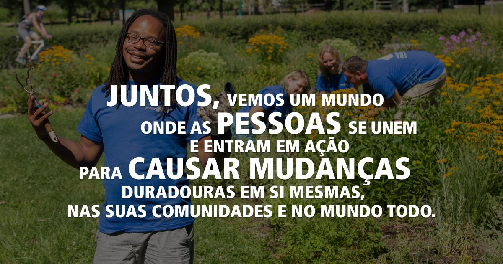

Rotary Club de Bauru
Ano rotário 2022-23 - Plano de Atividades
DADOS SOBRE ROTARY INTERNATIONAL
Quem Somos?
O Rotary é uma rede global de líderes comunitários, amigos e vizinhos que veem um mundo onde as pessoas se unem e entram em ação para causar mudanças duradouras em si mesmas, nas suas comunidades e no mundo todo.
O Fundador
O Rotary começou com a visão de um homem: Paul Harris. O advogado formou o Rotary Club de Chicago no dia 23 de fevereiro de 1905 para que profissionais de diferentes setores pudessem trocar ideias e fazer amizades duradouras.
| PRIORIDADE 1 | PRIORIDADE 2 | PRIORIDADE 3 | PRIORIDADE 4 |
|---|---|---|---|
| IMPACTO | ALCANÇE | ENGAJAMENTO | ADAPTAÇÃO |
| Como Pessoas de Ação, tomamos decisões baseadas em fatos. | Primamos pela inclusão, engajamento e compaixão, com a ambição de conquistar um mundo melhor para todos. | Como Pessoas de Ação, criamos relacionamentos significativos que transcendem tempo e fronteiras | Como Pessoas de Ação, buscamos ideias e perspectivas que fortaleçam o Rotary e tragam mudanças. |